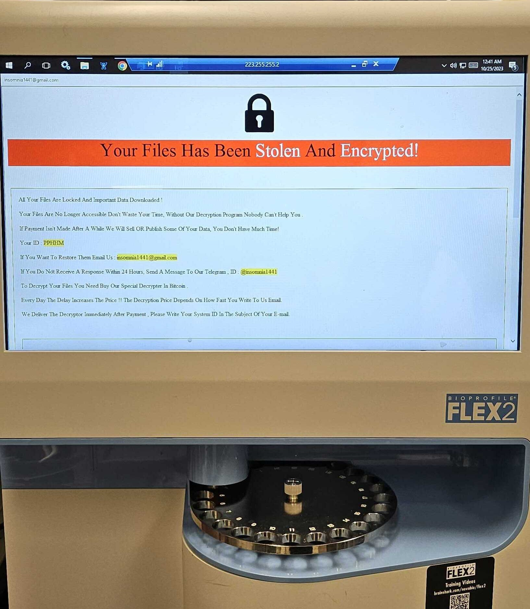
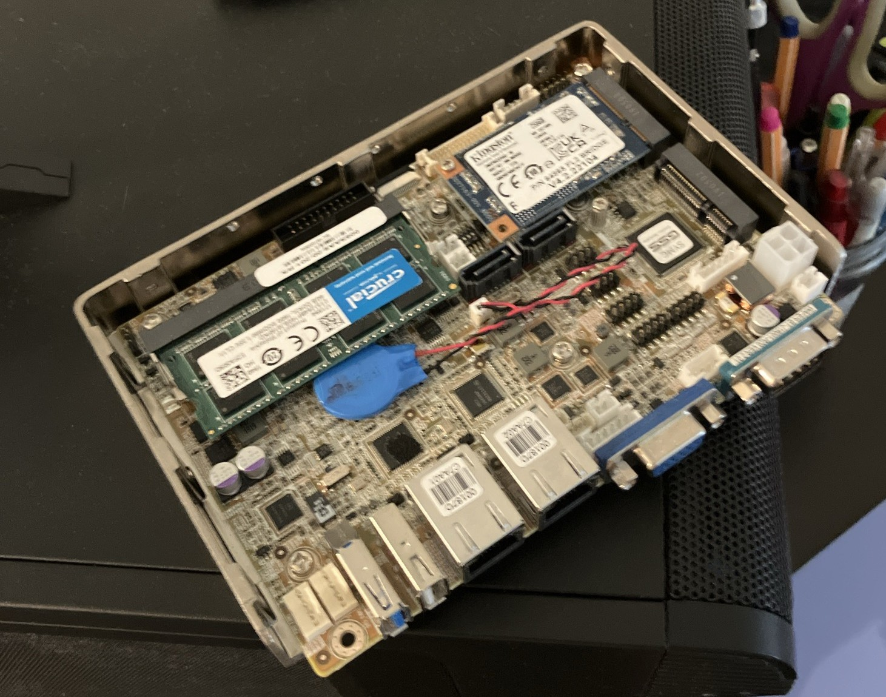
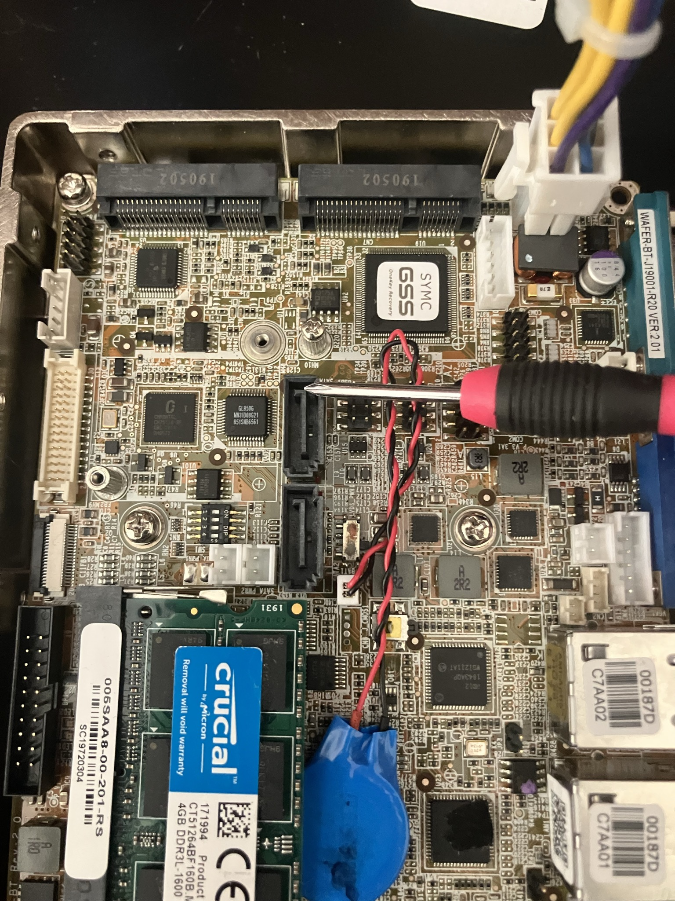
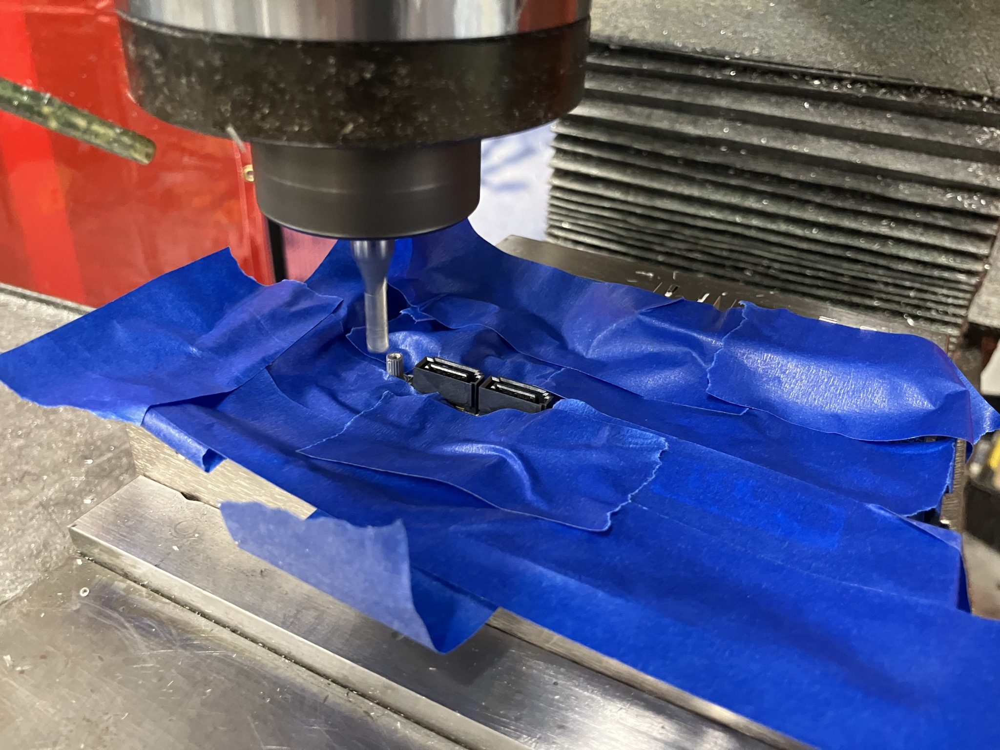

Everywhere I've lived in the Boston area, I've had only one option for internet service. I'm not sure what tragic series of events led to this monopoly, but as you might expect from a complete lack of competition, the service is terrible. During a recent move, we spent hours on the phone getting the provider to understand that we were moving in a few days, and after we got everyone on the same page... they mistakenly closed out our account a week early, somehow breaking our internet so badly that it took several more hours on the phone and a truck roll for an embarrassed technician to tell us that it was a sales problem and therefore not something he could repair.
Listening to the technician arguing with their employer's customer support over the phone, I resolved to do whatever it took to break free. This was around the time that Maya Posch's first article about DIY routers appeared in Hackaday, and I was inspired to give it a go. This isn't really "breaking free" at all, since it seems to cost more to use a custom router and access point for some reason, but at least it gave me some satisfaction to think I was taking back some control over our home network. The other big draw is that I know very little about networking, and this felt like a good opportunity to learn a bunch.
For hardware, I decided to use a WAFER-BT-J19001-R20 single board computer that I had sitting on my desk. This computer has an interesting history - it used to serve as the interface computer for a cell counter in our lab, until we arrived one morning to discover that we had been hacked:

Fortunately, we had backups of all of our data, but we still needed the instrument working again and for equipment like this, that means calling the manufacturer and having them fly out a technician. To my surprise, instead of re-imaging the device, their protocol was to tear out the whole computer and plug in a new one. Chatting with the technician, I asked if I could keep the old one and he said I could! Windows System Restore completely removed the ransomware (and all the proprietary firmware), and I was left with a functional but generally unimpressive windows machine.

This is a commercially available (now obsolete) board from IEI, and although they refer to it as a single board computer, it's not clear how they arrived at that designation since it needs an external drive and RAM to be useful. The one I have comes with a 256GB SSD in one of the mini PCIe slots, and an 8GB DDR3 RAM stick. Most exciting is the onboard dual gigabit ethernet, which makes this a good candidate for a router.
Step one was loading OpenWRT, which went smoothly until the time came to
copy the image to the SSD. I figured that instead of finding a whole new
operating system just to copy the image to the hard drive, I might as well
do it directly from the USB stick I had used to test it out in the first
place. This was a big mistake, because the root partition was not large
enough to extract the image after downloading it. This required piping the
output of gunzip to dd, and then I was up and
running, at least until the time came to expand the root partition and
filesystem on the SSD. In theory, this can be done live, but every time I
tried the instructions on the wiki, the device would end up bricked when
it tried to reboot. In the end, I did it with the drive unmounted while
booted from the USB stick I had used to load the image, but even this was
complicated by the fact that the bootloader on the USB stick seemed to
know OpenWRT was available on the SSD, and booting from the USB stick
would result in the root filesystem on the SSD anyway. Exasperated, the
final series of steps looked like:
dd zeros to the SSD to obliterate whatever was happening
there
gunzip/dd the image to the SSDFor this to be useful, I needed to add WiFi. As I understand it, most hardcore home networkers will use dedicated access points, but I am not hardcore and buying a new access point seemed to run against the "internet from junk" ethos of the Hackaday articles and this project. Instead, I opted to buy a dual band mini-PCIe WiFi card that the internet assured me would work with OpenWRT from Ebay, which cost approximately as much as a new router. The only problem is that the WAFER has only one full-sized mini PCIe slot - the other is a "half-mini" card. While there's no real electrical difference, the mounting standoff is in the wrong place, and there are two SATA connectors and some headers in the space I need to occupy with the full sized (mini) PCIe WiFi card.

The first solution I considered was to buy a smaller SSD, since I don't need all 256GB. Sadly, the memory shortage means that even a much smaller memory card costs much more than I'm willing to pay. If I ever decide I need to upgrade this system, I can scrap it and buy a new networking setup with the proceeds from selling the RAM and SSD on Ebay. On the other hand, I have no intention of connecting a SATA drive to this router, and I don't anticipate needing more USB or digital IO pins, so I decided to remove them to clear out space for a bigger card.
The SATA connectors are glued down and the mounting pins are through-hole, and the whole board is put together with characteristic high temperature solder. Even the PCIe mounting post is soldered down to a massive pad. In this case, a miserable job with a heat gun and soldering iron can be traded for a slightly riskier but infinitely more satisfying job with a mill, and I happened to be in the machine shop for another project anyway:
